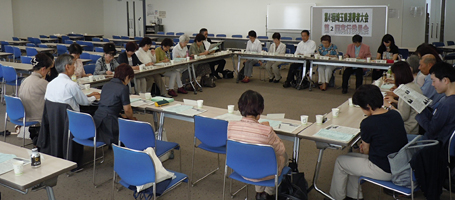

- 【日 時】
- 5月23日（木）13:30～15:30
- 【場 所】
- 浦和コミュニティセンター 第15集会室
- 【参加者】
- 28人（22団体）・事務局（4人）

■議 題
- 出席者より自己紹介の後、第1回実行委員会報告、第1回プレ学習会（参加者数129名）について報告しました。
- 第49回埼玉県消費者大会の分担金を本日以降納入していただくお願いをしました。
- 第49回埼玉県消費者大会予算(案)を、資料、大会資料集の印刷費や会場費、郵送費等の支出見直しの考え方など合わせて提案しました。
- 全体会司会、オープニング、講演時間、大会アピール、大会スローガン、保育について意見交換しました。オープニングに会場の参加者で合唱すること、団体紹介は省かず呼名にて紹介すること、役割分担を決定しました。他については、次回までに意見をいただきながら確認することにしました。
- 講演について
講師上野千鶴子さんに関しての情報や話して頂く内容など意見交換しました。講演タイトルは次回の決定に向けて検討することにしました。
- プレ学習会について
第2回は7/18 大村美香氏を講師に、日本の食の安全を守る観点から、TPP参加の場合、食品添加物・農薬の基準の変化や、放射性物質汚染の問題、食品表示の改定により消費者の選択はどうしたら良いか等の学習をすることを確認しました。
- 分科会について
第1回の話し合いをもとに、「くらしと経済」に関わる分科会を設け、経済の在り方と憲法に照らして、生活の格差や貧困、雇用等を考える学習をすることとし、「食」「医療･社会保障」「消費者問題」「教育･子育て」の分科会は引き続き開催となりました。
- 「市町村における消費生活関連事業調査」の実施について
調査の進め方、アンケートの内容について意見交換し、調査方法は別途具体化し、次回提案することを確認しました。
- 埼玉県消費者大会の県への要請書について
第48回大会の要望を参考に、挙げて頂くよう提案しました。
- 大会資料の広告掲載のお願いについて
掲載を見込める事業者の案を上げてもらうよう提案しました。
- 基調報告・県への要請、大会スローガン、分科会担当の希望、次回実行委員会の出欠など、FAXで返信頂くことを確認しました。
|